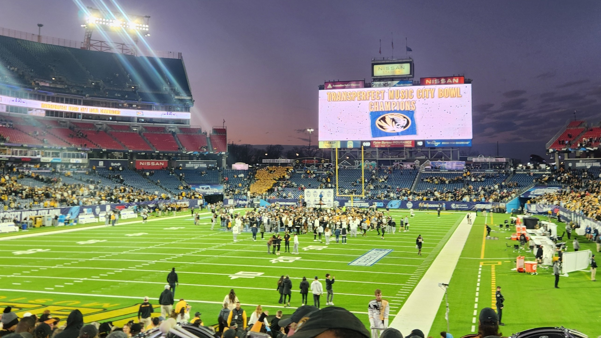

Things I Like
Hobbies:
- Playing the trumpet
- Coding/programming
- Listening to music
- Playing video games
- Cooking
- Watching Mizzou sports (screw kU)
- Going on walks/runs
Some Favorite Foods (No Particular Order):
- Chicken fettucine alfredo
- Pizza
- Fried rice
- Steak (medium-rare)
- Enchiladas
- Ice cream
- Grilled ham and swiss sandwich
- Brownies
- Grilled/roasted vegetables
Some Things I Don't Like:
- Heights
- Winter
- Doing laundry
- Most (but not all) fruits
- Columbia's traffic/drivers
- Calculus II
- Waiting
- kU
